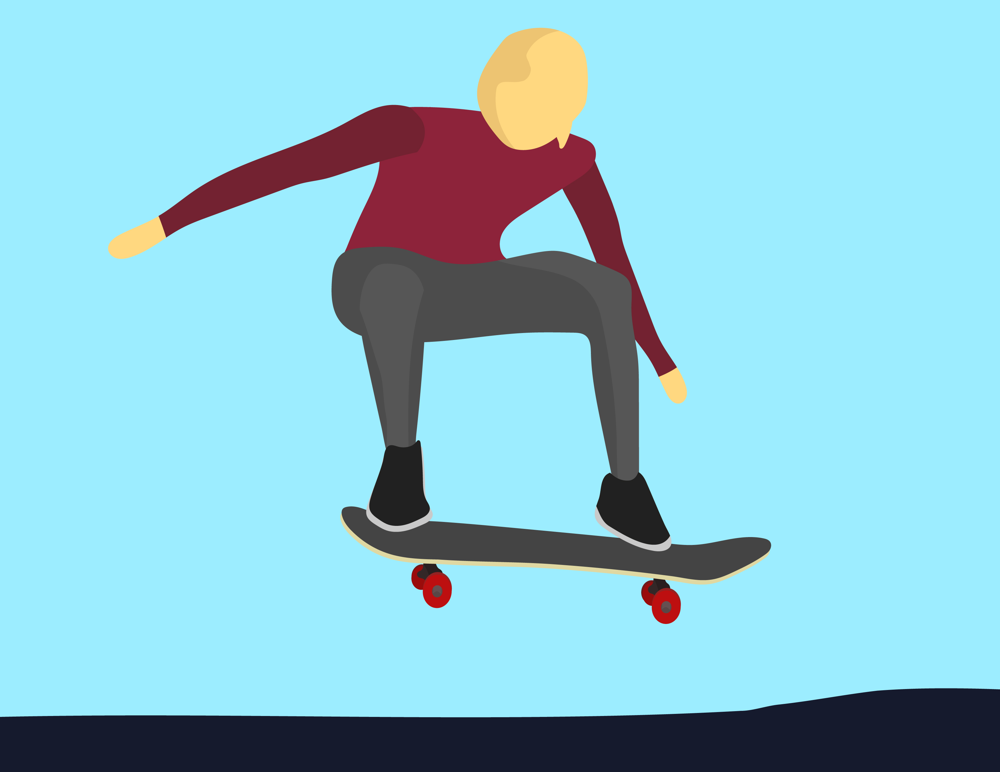
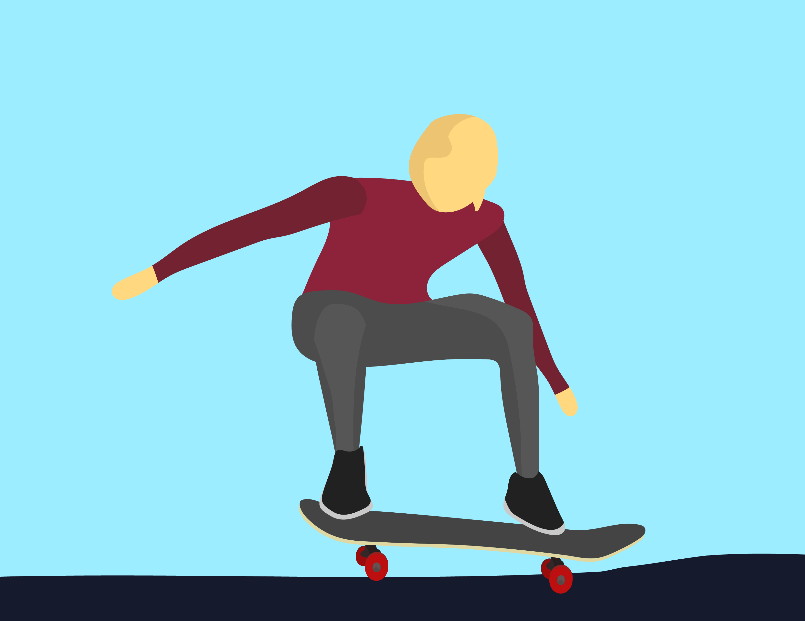

STEP 6
Stick the Landing
Landing the ollie is just as important as getting into the air. Aim to land with all four wheels hitting the ground at the same time. Keep your knees bent to help absorb the impact of the landing and prevent any hard shocks to your legs.


If you land with your weight too far forward or backward, you’ll probably lose balance, so try to land squarely over the middle of the board. Practice staying calm and steady as you come down, and if you don’t land perfectly at first, that’s okay—stick with it, and the landings will get smoother with time.